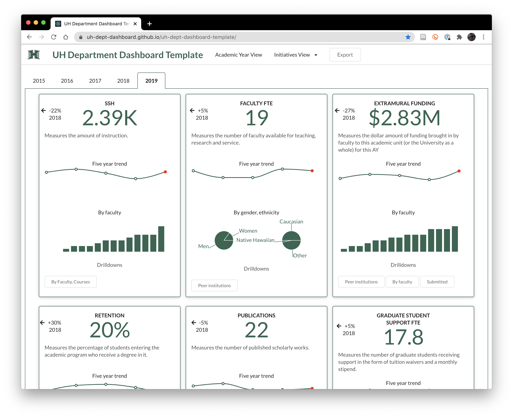

UH Department Dashboard
Low cost, useful measures of teaching, research and service for University of Hawaii academic departments

Customizable
Each department specifies the measures they believe to be useful to track over time.
Automated
Scripts simplify data collection and analysis, making it easy to update your dashboard with data at the end of each academic year.
UH focused
Data is collected from internal and external repositories of interest to University of Hawaii departments.